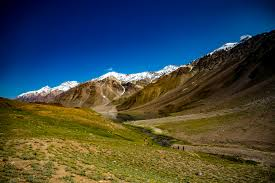

Highlights
- Key Monastery: A 1,000-year-old Tibetan Buddhist monastery perched on a hill, known for its breathtaking views and spiritual ambiance.
- Chandratal Lake: A crescent-shaped lake at high altitude, famed for its turquoise water, stunning reflections, and camping under starry skies.
- Pin Valley National Park: A unique cold desert biosphere with rare wildlife like the snow leopard, ibex, and Himalayan birds, perfect for trekking and nature photography.
- Komic Village: One of the world’s highest villages accessible by road, offering dramatic views of the Spiti landscape and housing the remote Komic Monastery.
- Tabo Monastery: A UNESCO-listed heritage site known for its ancient murals, stucco statues, and centuries-old Buddhist relics, often called the “Ajanta of the Himalayas.”
- Langza Village: Famous for fossil hunting, this village provides panoramic views of snow-capped mountains, including the stunning Chau Chau Kang Nilda peak.
- Dhankar Monastery and Fort: A cliff-top monastery with scenic views of the Spiti and Pin rivers’ confluence, offering hikes up to Dhankar Lake for serene solitude.





Lahaul and Spiti
Day 1: Manali to Kaza via Kunzum Pass
- Route: Manali - Rohtang Pass - Kunzum Pass - Kaza (7-9 hours)
- Highlights: Rohtang Pass, Kunzum Pass, Spiti’s dramatic landscapes
- Activities: Scenic drive through high mountain passes, stop at Kunzum Pass to enjoy panoramic views, acclimatize to altitude
- Overnight: Stay in Kaza
Day 2: Kaza - Key Monastery - Kibber Village - Chicham
- Highlights: Key Monastery, one of Spiti’s most iconic monasteries; Kibber Village (one of the world’s highest inhabited villages); Chicham Bridge (Asia’s highest bridge)
- Activities: Explore Key Monastery, visit Kibber, cross Chicham Bridge
- Overnight: Stay in Kaza
Day 3: Kaza - Hikkim - Komic - Langza
- Highlights: Hikkim (world’s highest post office), Komic (one of the highest villages), Langza for fossil hunting and stunning landscapes
- Activities: Send a postcard from Hikkim, explore Komic Monastery, fossil hunting at Langza
- Overnight: Stay in Kaza
Day 4: Kaza to Dhankar and Pin Valley
- Highlights: Dhankar Monastery (perched dramatically on a cliff), Dhankar Lake, Pin Valley National Park for serene landscapes
- Activities: Visit Dhankar Monastery, optional trek to Dhankar Lake, explore Mudh village in Pin Valley
- Overnight: Stay in Mudh Village (Pin Valley) or return to Kaza
Day 5: Kaza to Losar - Chandratal Lake
- Route: Kaza - Losar - Chandratal Lake
- Highlights: Chandratal Lake (a high-altitude lake known for its stunning color and reflection), views of the Chandra River
- Activities: Leisure hike around the lake, camping experience at Chandratal (note: camping season is June-September)
- Overnight: Camp near Chandratal Lake
Day 6: Chandratal to Sissu (Lahaul Valley)
- Route: Chandratal - Kunzum Pass - Sissu (Lahaul Valley)
- Highlights: Kunzum Pass views, Lahaul Valley’s lush landscapes, Sissu Waterfall
- Activities: Drive to Sissu, visit Sissu Waterfall, take in views of the Bhaga River and Lahaul’s greener terrain
- Overnight: Stay in Sissu
Day 7: Sissu to Manali via Atal Tunnel
- Highlights: Atal Tunnel (one of the world’s longest tunnels at high altitude
- Activities: Scenic drive through the tunnel, admire the shift in landscapes from Lahaul to Manali
- Departure from Manali